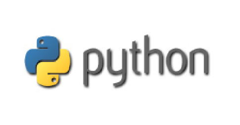

尾山ゼミとは
尾山ゼミは2014年度に開講されたばかりのゼミで、プログラミング言語Pythonを用いて様々な経済学について勉強します。
経済学部のゼミとして少人数で自らプロジェクトを担当し発表する機会が多いことも特徴です。
Pythonとは

Pythonとはプログラミング言語の１つであり、初心者にも扱いやすい操作性と
多様なライブラリにより実現した汎用性が特徴です。
経済学を勉強する上でも必須となるコンピューターリテラシーを一緒に身につけましょう！